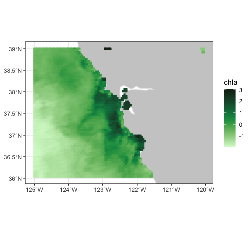
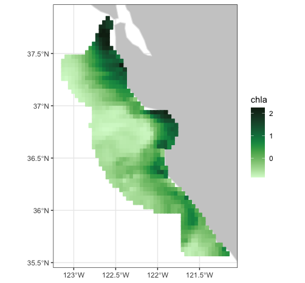
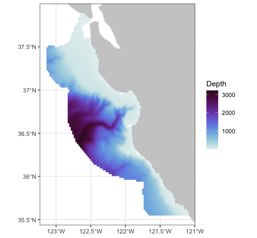

Using the rerddapXtracto routines
Roy Mendelssohn
2024-01-12
Source:vignettes/UsingrerddapXtracto.Rmd
UsingrerddapXtracto.RmdIntroduction
rerddapXtracto is an R
package developed to subset and extract satellite and other
oceanographic related data from any ERDDAP server using the R package rerddap developed
by Scott Chamberlain and the wonderful people at ‘rOpenSci’. ERDDAP is a simple to use yet powerful web data
service developed by Bob Simons. rerddapXtracto extends the
rerddap package by allowing a user to extract data for a
moving point in time along a user-supplied set of longitude, latitude,
depth and time points; and also extracting data within a polygon
(through time).
rerddapXtracto version 1.0.0 represented a major rewrite
of the internal workings of rxtracto(), which were
invisible to the user but provided for faster execution particularly for
large tracks. Among other improvements. instead of doing an extract for
each point, one extract is done for all points that match to the same
time period in the ERDDAP dataset. For large extracts,this can make a
very large difference in the speed of execution. This also means that
for extracts that do not have a time coordinate, such as bathymetric
data, only one extract will be made from ERDDAP. If the data are of high
enough resolution and the data request covers a large enough area, it is
possible this will exceed the 2GB limit of ERDDAP netCDF files, and the
extract will have to be done in pieces.
rerddapXtracto version 1.1.0 and above now allow
rxtracto() to use the new “interpolate” service in ERDDAP. The “interpolate” service allows for
100 points along the track to be processed at a time, which can greatly
speed-up large extracts. A downside is that “neighbors” are done in
terms of pixels, not coordinate units, so that for high-resolution
datasets the “neighborhood” used to make the interpolation can be quite
small in terms of coordinate units. Presently the dataset must have at
least coordinates of time, latitude and longitude, so that the
interpolate feature will not work with 2-D datasets such as bathymetry
data.
Features that have been added over the course of development include
allowing the z-coordinate to vary in both rxtracto() and
rxtracto_3D(); plotting functions plotTrack()
and plotBBox() that can take the output from
rxtracto() and rxtracto_3D()and produce maps
of the data, including animated maps; the ability to cross the dateline
in a request when the ERDDAP dataset has longitudes in the range (-180,
180); an optional progress bar in rxtracto(); and the
return in rxtracto() of values extracted so far should the
extract fail partway through the extract; rxtracto() ow
works with projected datasets and an example is given below .
Since the z-coordinate is not limited to be at a set location, for
rxtracto_3D() this means that if the z-coordinate needs to
be given, then it must be of length two. For rxtracto() if
the z-coordinate needs to be given it must be of the same length as the
other coordinates, and can also have a “zlen”“, like”xlen” and “ylen”,
that defines a bounding box within which to make the extract. The
advantage of this is it allows rxtracto() to make extracts
moving in (x, y, z, t) space.
The plotting function plotTrack() for tracks and
plotBBox() for grids use the R package plotdap, originally
developed for producing maps from data extracted using
rerddap. The plotting functions now allow for user defined
continental outlines (important if crossing the dateline), a user
defined crs, as well as animation. When more control of a plot is
desired, ggplot2 (or other map plotting packages) can be
used directly. Several examples in this vignette demonstrate the use of
ggplot2.
Requesting an extract that crosses the dateline for an ERDDAP dataset
that is on a (-180, 180) longitude grid must be done with care. The
requested longitudes must be in the range (0, 360) and several checks
that the request is within the bounds of the dataset are disabled. This
is particularly important when using rxtracto(), where the
observed longitude point may not cross the dateline but the bounding box
defined by “xlen” may cross it.
The Main rerddapXtracto functions
There are three main data extraction functions in the
rerddapXtracto package:
rxtracto <- function(dataInfo, parameter = NULL, xcoord = NULL, ycoord = NULL, zcoord = NULL, tcoord = NULL, xlen = 0., ylen = 0., zlen = 0., xName = 'longitude', yName = 'latitude', zName = 'altitude', tName = 'time', interp = NULL, verbose = FALSE, progress_bar = FALSE)rxtracto_3D <- function(dataInfo, parameter = NULL, xcoord = NULL, ycoord = NULL, zcoord = NULL, tcoord = NULL, xName = 'longitude', yName = 'latitude', zName = 'altitude', tName = 'time', verbose = FALSE, cache_remove = TRUE)rxtractogon <- function(dataInfo, parameter, xcoord = NULL, ycoord = NULL, zcoord = NULL, tcoord = NULL, xName = 'longitude', yName = 'latitude', zName = 'altitude', tName = 'time', verbose = FALSE)
and two functions for producing maps:
plotTrack <- function(resp, xcoord, ycoord, tcoord, plotColor = 'viridis', myFunc = NA, mapData = NULL, crs = NULL, animate = FALSE, cumulative = FALSE, name = NA, shape = 20, size = .5)plotBBox <- function(resp, plotColor = 'viridis', time = NA, myFunc = NA, mapData = NULL, crs = NULL, animate = FALSE, cumulative = FALSE, name = NA, maxpixels = 10000)
New since version 1.1.6 is a helper function to convert output from
rxtracto_3D() and rxtractogon() to “tidy”
long-form:
tidy_grid <- function(response)
This makes it easier to use the output in packages such as
ggplot2.
The data extraction functions require information about the dataset
obtained by the function rerddap::info(), and possibly
having to give the names of the coordinate variables, as these can not
be assumed (for example the zcoord could be in sigma coordinates). More
specifically:
- dataInfo: the return from an
rerddap::info()call to a dataset on an ERDDAP server - parameter: character string containing the name of the parameter to extract
- xName: character string with name of the xcoord in the ERDDAP dataset (default “longitude”)
- yName: character string with name of the ycoord in the ERDDAP dataset (default “latitude”)
- zName: character string with name of the zcoord in the ERDDAP dataset (default “altitude”)
- tName: character string with name of the tcoord in the ERDDAP dataset (default “time”)
- verbose: logical variable (default FALSE) if the the URL request should be verbose
Time has come today
With all due respect to the ‘Chambers Brothers (their song ’Time Has
Come Today’), since any ERDDAP served
gridded data can be accessed, care must be used with the values of
“time” passed to rerddapXtracto. Datasets can have time
increments of less than a day, an example of which is given below. ERDDAP
maps all times to “Zulu” time, of the form “2016-11-01T00:00:00Z”. The
date-time “2016-11-01” gets mapped to “2016-11-01T00:00:00Z”. Some R date-time functions when the resolution is
finer than a day map the time to the time-zone of the user’s computer.
Be certain that the times you give will be mapped correctly. The
parse_date() function of the parsedate
package is used to translate date-time strings, if in doubt you can use
that function to see how the times you are passing will be
interpreted.
Setting up
rerddapXtracto uses the R
packages ncdf4, parsedate,
plotdap, rerddap, and sp, and
these packages (and the packages imported by these packages) must be
installed first or rerddapXtracto will fail to install.
install.packages("ncdf4", dependencies = TRUE)
install.packages("parsedate", dependencies = TRUE)
install.packages("plotdap", dependencies = TRUE)
install.packages("rerddap", dependencies = TRUE)
install.packages("sp", dependencies = TRUE)The rerddapXtracto package is available through CRAN and can be installed by:
install.packages("rerddapXtracto", dependencies = TRUE)The development version of the rerddapXtracto package is
available from Github. To install
the development version,
install.packages("devtools")
remotes::install_github("rmendels/rerddapXtracto", subdir = 'development')Note that plotdap depends on a number of packages that
must be installed. These include the packages cmocean,
ggplot2, raster and sf. To use
the animation features, gganimate must be installed.
If the other R libraries have been installed they will be found and do not need to be explicitly loaded.
Getting Started
There are some fine points that need to be understood to properly use
the plotting functions, in particular plotBBox(). Both
plotTrack() and plotBBox() rearrange the
output so that the functions plotdap::add_tabledap() and
plotdap::add_griddap() think that the output is from
rerddap, and then make the appropriate plotdap
call. When the data that are passed to add_griddap() has
multiple time periods, there are two options. The first option is to set
the parameter “time” to a function that reduces the data to one
dimension in the time coordinate (such as the mean), or else to set
“time” equal to “identity” and set “animate” to be “TRUE” which will
produce a time animation of the results. If an animation is requested
and the option “cumulative” is set to be “TRUE”, then the animation will
be cumulative. This is a nice feature for displaying tracks through
time. The function plotBBox() works the same way, except
that the default function is mean(na.rm = TRUE). The
following link to examples that show how to use different features of
the plotting functions:
Setting the color palette shows how to use the “plotColor” option. The “plotColor” parameter can be the name of any of the colors included in the
cmoceanpackage. Thecmoceancolormaps were designed by Kristen Thyng (see https://matplotlib.org/cmocean/ and https://github.com/matplotlib/cmocean), and were initially developed for Python)Plot one time period example shows how to manipulate an existing output from
rxtracto_3D()orrextractogon()to plot just one time period.Transform the data example shows how to use the “myFunc” option to transform the data before plotting. The function has to be a function of a single argument. This example also shows how to use the “name” option to change the name displayed on the color bar. In this example, we want depth to go downwards in the colorbar, and the name given changed from “altitude”, which is the name on ERDDAP, to the name “Depth”.
Name example shows how to change the name on the colorbar.
Modify the graph shows how to use the
plotdapfunctionadd_ggplot()to modify a graph once it has been generated.Animate a track shows how to animate a track over time.
Animate a grid shows how to animate a grid with multiple time periods.
The first step is to obtain information about the dataset of interest from the ERDDAP server being used. The needed information include:
- baseURL of the ERDDAP server (the default is https://upwell.pfeg.noaa.gov/erddap)
- the datasetID of the data to be accessed (for example the 1-day composite of chlorophyll from MODIS Aqua has a datasetID of ‘erdMBchla1day’ - see https://upwell.pfeg.noaa.gov/erddap/griddap/erdMBchla1day.html)
- the parameter name (in this case “chlorophyll”)
In order for rerddapXtracto to have this information, as
well as the coordinate variables and their limits, and the parameter
names, a call must be made to the function rerddap::info()
for the appropriate datasetID and baseURL:
require("rerddap")
## base URL does not need to given because it is the default one
dataInfo <- info('erdMBchla1day')
dataInfothis returns the following information:
<ERDDAP info> erdMBchla1day
Base URL: https://upwell.pfeg.noaa.gov/erddap/
Dimensions (range):
time: (2006-01-01T12:00:00Z, 2020-10-27T12:00:00Z)
altitude: (0.0, 0.0)
latitude: (-45.0, 65.0)
longitude: (120.0, 320.0)
Variables:
chlorophyll:
Units: mg m-3An rxtracto example
In this section data is extracted along a trackline found in the Marlintag38606 dataset, which is the track of a tagged marlin in the Pacific Ocean (courtesy of Dr. Mike Musyl of the Pelagic Research Group LLC), and then simple plots of the extracted data are made. Since this can be a long extract, a progress bar is displayed:
require("rerddap")
require("rerddapXtracto")
# First we will copy the Marlintag38606 data into a variable
# called tagData so that subsequent code will be more generic.
tagData <- Marlintag38606
xpos <- tagData$lon
ypos <- tagData$lat
tpos <- tagData$date
zpos <- rep(0., length(xpos))
swchlInfo <- rerddap::info('erdSWchla8day')
swchl1 <- rxtracto(swchlInfo, parameter = 'chlorophyll',
xcoord = xpos, ycoord = ypos, tcoord = tpos, zcoord = zpos,
xlen = .2, ylen = .2, progress_bar = TRUE)Plotting the results
The track line with the locations colored according to the mean of
the satellite chlorophyll around that point can be plotted
using plotTrack(). Positions where there was a tag location
but no chlorophyll values are also shown. This example
shows the use of the “plotColor” parameter to use the
cmocean “algae” color palette.
require("ggplot2")
require("plotdap")
myPlot <- plotTrack(swchl1, xpos, ypos, tpos, plotColor = 'algae')
myPlot
Animating the track
To make a cumulative animation of the track:
myPlot <- plotTrack(swchl1, xpos, ypos, tpos, plotColor = 'algae',
animate = TRUE, cumulative = TRUE)
Output from rxtracto() can readily be converted to a
form for use in the “tidyverse” by converting the output to a dataframe,
to wit:
swchl1_tidy <- as.data.frame(swchl1)Topography data
This example demonstrates how to pass a function to
plotTrack() to transform the data before plotting, how to
change the name shown on the colorbar, and how to call
plotTrack() if the dataset does not have a time
coordinate.
require("ggplot2")
require("plotdap")
require("rerddap")
require("rerddapXtracto")
ylim <- c(15, 30)
xlim <- c(-160, -105)
topoInfo <- rerddap::info('etopo360')
topo <- rxtracto(topoInfo, parameter = 'altitude', xcoord = xpos, ycoord = ypos, xlen = .1, ylen = .1)
myFunc = function(x) -x
topoPlot <- plotTrack(topo, xpos, ypos, NA, plotColor = 'dense',
name = 'Depth', myFunc = myFunc)
topoPlot
Track moving in (x, y, z, t) space.
The following is an artificial example showing a track moving in (x, y, z, t) space. Since the times of the model output change, the actual times are retrieved, and the last three times used in the example.
require("rerddap")
urlBase <- "https://erddap.marine.ie/erddap/"
parameter <- "Sea_water_temperature"
dataInfo <- rerddap::info("IMI_CONN_3D", url = urlBase)
#get the actual last 3 times, and extract from data frame
dataInfo1 <- read.csv("https://erddap.marine.ie/erddap/griddap/IMI_CONN_3D.csv0?time[last-2:1:last]", stringsAsFactors = FALSE, header = FALSE, row.names = NULL)
sstTimes <- dataInfo1[[1]]
sstLats <- c(53.505758092414446, 53.509303546859805, 53.51284900130517)
sstLons <- c(-10.25975390624996, -10.247847656249961, -10.23594140624996)
sstDepths <- c(2, 6, 10)
sstTrack <- rxtracto(dataInfo, parameter = parameter, xcoord = sstLons, ycoord = sstLats, tcoord = sstTimes, zcoord = sstDepths, xlen = .05, ylen = .05, zlen = 0., zName = 'altitude')
str(sstTrack)This returns the following structure information:
List of 13
$ mean Sea_water_temperature : num [1:3] 11.7 11.7 11.6
$ stdev Sea_water_temperature : num [1:3] 0.0407 0.0555 0.0859
$ n : int [1:3] 493 491 484
$ satellite date : chr [1:3] "2020-10-31T22:00:00Z" "2020-10-31T23:00:00Z" "2020-11-01T00:00:00Z"
$ requested lon min : num [1:3] -10.3 -10.3 -10.3
$ requested lon max : num [1:3] -10.2 -10.2 -10.2
$ requested lat min : num [1:3] 53.5 53.5 53.5
$ requested lat max : num [1:3] 53.5 53.5 53.5
$ requested z min : num [1:3] 2 6 10
$ requested z max : num [1:3] 2 6 10
$ requested date : chr [1:3] "2020-10-31T22:00:00Z" "2020-10-31T23:00:00Z" "2020-11-01T00:00:00Z"
$ median Sea_water_temperature: num [1:3] 11.7 11.7 11.6
$ mad Sea_water_temperature : num [1:3] 0.0208 0.0361 0.0986
- attr(*, "row.names")= chr [1:3] "1" "2" "3"
- attr(*, "class")= chr [1:2] "list" "rxtractoTrack"Crossing the dateline
The following is an artificial example of a track that crosses the date-line, using the MUR(Multi-scale Ultra-high Resolution) SST analysis:
dataInfo <- rerddap::info('jplMURSST41mday')
parameter <- 'sst'
xcoord <- c(179.7, 179.8, 179.9, 180., 180.1, 180.2, 180.3, 180.4)
ycoord <- c(40, 40, 40, 40, 40, 40, 40, 40)
tcoord <- c('2018-03-16', '2018-03-16', '2018-03-16','2018-03-16','2018-03-16',
'2018-03-16','2018-03-16','2018-03-16')
xlen <- .05
ylen <- .05
extract <- rxtracto(dataInfo, parameter = parameter, xcoord = xcoord,
ycoord = ycoord, tcoord = tcoord,
xlen = xlen, ylen = ylen)
str(extract)The returned structure is:
List of 13
$ mean sst : num [1:8] 11.1 11.1 11.1 11.2 11.1 ...
$ stdev sst : num [1:8] 0.01192 0.00602 0.01025 0.00876 0.01446 ...
$ n : int [1:8] 30 30 35 25 30 30 30 35
$ satellite date : chr [1:8] "2018-03-16T00:00:00Z" "2018-03-16T00:00:00Z" "2018-03-16T00:00:00Z" "2018-03-16T00:00:00Z" ...
$ requested lon min: num [1:8] 180 180 180 180 180 ...
$ requested lon max: num [1:8] 180 180 180 180 180 ...
$ requested lat min: num [1:8] 40 40 40 40 40 ...
$ requested lat max: num [1:8] 40 40 40 40 40 ...
$ requested z min : logi [1:8] NA NA NA NA NA NA ...
$ requested z max : logi [1:8] NA NA NA NA NA NA ...
$ requested date : chr [1:8] "2018-03-16" "2018-03-16" "2018-03-16" "2018-03-16" ...
$ median sst : num [1:8] 11.1 11.1 11.1 11.2 11.1 ...
$ mad sst : num [1:8] 0.01416 0.0052 0.01149 0.00887 0.01744 ...
- attr(*, "row.names")= chr [1:8] "1" "2" "3" "4" ...
- attr(*, "class")= chr [1:2] "list" "rxtractoTrack"ERDDAP Interpolate service
ERDDAP has a new “Interpolate” service
which takes a table of coordinate values from a gridded dataset, up to
100 entries at a time, and will interpolate the value at each point
based on quite a large list of different interpolation methods, as well
as the number of neighbors to use in the interpolation (see https://coastwatch.pfeg.noaa.gov/erddap/convert/interpolate.html.
As the “Interpolate” service includes the mean, median and standard
deviation of the neighboring points, the service can return similar
results as does the usual rxtracto() but much more quickly,
as 100 observations are processed at a time. This greatly reduces the
time it takes to process very large tracks. A downside is that neighbors
are defined in terms of pixels, not in terms of coordinate units as is
used in the usual rxtracto() call. For very high-resolution
datasets even the largest number of neighbors provided by the service
may not be large enough to capture the uncertainty in the actual
location of an observation in the track.
The “Interpolate” service requires that the ERDDAP server being accessed is at least
version 2.10. As of this writing, the default ERDDAP in rerddap is at https://upwell.pfeg.noaa.gov/erddap, which is not.
Therefore, as in the example below, you need to make certain of the
version of ERDDAP used in the call to
rerddap:info().
The “interpolate” option is implemented in a new, optional argument
to rxtracto(), “interp = NULL”. Since the argument is
optional, and has a default value of “NULL”, existing calls to
rxtracto() will not be affected by the change. To use the
interpolation option, “interp” must be a set equal to a character array
of size 2, that is
interp <- c('interpolation method', 'number of neighbors')For example, to use the ‘Mean’ function with 16 neighbors this would be:
interp <- c('Mean', '16')Note carefully that “Mean” is capitalized, and that the number of neighbors is passed as a character string, not as a number. Also the values of “xlen”, “ylen”, and “zlen”, if given, are ignored. So to use the “interp” option in the first Marlin example, the call would be:
my_interp <- c('Mean', '16')
#
# use the coastwatch ERDDAP as it is a more recent version
#
swchlInfo <- rerddap::info('erdSWchla8day',
url = 'https://coastwatch.pfeg.noaa.gov/erddap/')
swchl1 <- rxtracto(swchlInfo, parameter = 'chlorophyll',
xcoord = xpos, ycoord = ypos, tcoord = tpos, zcoord = zpos,
interp = my_interp, progress_bar = TRUE)Tracks along projected data and Polar Bears
rxtracto() can now extract tracks from projected ERDDAP datasets if the proper data
transformations are done first. Here we cover one possible way of
transforming the data in order to work with rxtracto() by
extracting sea ice concentration along a polar bear track. The polar
bear track is in the included ‘PB_Argos’ dataset, which is described in
the paper “Auger-Méthé, M., Newman, K., Cole, D., Empacher, F., Gryba,
R., King, A. A., Leos-Barajas, V., Mills Flemming, J., Nielsen, A.,
Petris, G., and Thomas, L.. 2021. A guide to state–space modeling of
ecological time series. Ecological Monographs 91(4):e01470.
10.1002/ecm.1470” and is used by permission of the authors. The dataset
was obtained from https://datadryad.org/stash/dataset/doi:10.5061/dryad.4qrfj6q96.
One caveat is that while the vector parameters “xlen”, “ylen” and
“zlen” can still be used with projected data, to be sensible these
values must also be in projected units, and for many projections in
order to have a consistent box the values will have to vary with each
latitude-longitude pair. With the present version of
rxtracto() it is up to the user to make this calculation,
though the steps below should provide some idea of how to do so. In the
example, “xlen”, “ylen” are zero.
Given a “track” with latitude and longitude values and a projected dataset, the following steps are necessary:
Determine the projection used in the ERDDAP dataset.
Transform the latitudes and longitudes into this projection.
Make the extract
If desired, transform the projected coordinates back into latitude and longitude.
The dataset to be used is sea ice concentration from the NOAA/National Snow and Ice Data Center availabe from the Polarwatch ERDDAP at https://polarwatch.noaa.gov/erddap/griddap/nsidcG02202v4nh1day.html .
The first step is to extract the first 100 datapoints from the PB_Argos dataset.
PB_Argos_subset <- PB_Argos[1:100, ]
# datetime is not in format for ERDDAP
PB_Argos_subset$DateTime <- lubridate::as_datetime(PB_Argos_subset$DateTime)
head(PB_Argos_subset, 4)
# A tibble: 4 × 4
DateTime QualClass Lat Lon
<dttm> <chr> <dbl> <dbl>
1 2009-04-20 17:01:39 B 70.4 -132.
2 2009-04-20 17:23:00 A 71.0 -131.
3 2009-04-20 18:12:15 A 71.0 -131.
4 2009-04-20 20:43:17 A 70.9 -131.The dataset info can be used to find the dataset projection (note this uses EPSG codes for the CRS, which can be found at https://spatialreference.org/ref/epsg/):
url= 'https://polarwatch.noaa.gov/erddap/'
datasetid = 'nsidcG02202v4nh1day'
dataInfo <- rerddap::info(datasetid, url)
proj_crs_code_index <- which(dataInfo$alldata$NC_GLOBAL$attribute_name == "proj_crs_code" )
proj_crs_code <- dataInfo$alldata$NC_GLOBAL$value[proj_crs_code_index]
proj_crs_code
[1] "EPSG:3411"Next we will create a temporary dataframe with the latitude and longitude values, convert that dataframe to an ‘sf’ object, and then transform the coordinates:
temp_df <- data.frame(Lat = PB_Argos_subset$Lat, Lon = PB_Argos_subset$Lon)
# transform PB_Argos_subset to sf object
# EPSG:4326 is basic lat-lon coordinates
temp_df <- sf::st_as_sf(temp_df, coords = c("Lon", "Lat"), crs = 4326)
# project data
temp_df <- sf::st_transform(temp_df, crs = 3411)
# get projection coordinates
coordinates <- sf::st_coordinates(temp_df)Now things are set to perform the extract:
xcoord <- coordinates[, 1]
ycoord <- coordinates[, 2]
# R datetimes are passed as number, require ISO character string
tcoord <- as.character(PB_Argos_subset$DateTime)
parameter <- 'cdr_seaice_conc'
extract <- rxtracto(dataInfo,
xName="xgrid",
yName="ygrid",
tName="time",
parameter=parameter,
xcoord = xcoord,
ycoord = ycoord,
tcoord = tcoord
)
str(extract)
List of 13
$ mean cdr_seaice_conc : num [1:100] 1 1 1 1 1 1 1 1 1 1 ...
$ stdev cdr_seaice_conc : num [1:100] NA NA NA NA NA NA NA NA NA NA ...
$ n : int [1:100] 1 1 1 1 1 1 1 1 1 1 ...
$ satellite date : chr [1:100] "2009-04-21T00:00:00Z" "2009-04-21T00:00:00Z" "2009-04-21T00:00:00Z" "2009-04-21T00:00:00Z" ...
$ requested x min : num [1:100] -2143958 -2077605 -2077124 -2082576 -2036149 ...
$ requested x max : num [1:100] -2143958 -2077605 -2077124 -2082576 -2036149 ...
$ requested y min : num [1:100] -118477 -131404 -131955 -130368 -120720 ...
$ requested y max : num [1:100] -118477 -131404 -131955 -130368 -120720 ...
$ requested z min : logi [1:100] NA NA NA NA NA NA ...
$ requested z max : logi [1:100] NA NA NA NA NA NA ...
$ requested date : chr [1:100] "2009-04-20 17:01:39" "2009-04-20 17:23:00" "2009-04-20 18:12:15" "2009-04-20 20:43:17" ...
$ median cdr_seaice_conc: num [1:100] 1 1 1 1 1 1 1 1 1 1 ...
$ mad cdr_seaice_conc : num [1:100] 0 0 0 0 0 0 0 0 0 0 ...
- attr(*, "row.names")= chr [1:100] "1" "2" "3" "4" ...
- attr(*, "class")= chr [1:2] "list" "rxtractoTrack"Since a given location may not fall on a gridpoint of the dataset and extracts are performed at the nearest grid point, the locations of the extract in terms of latitude and longitude can be obtained by reversing the steps above:
xgrid <- 'requested x min'
ygrid <- 'requested y min'
temp_df <- data.frame(xgrid = extract[[xgrid]], ygrid = extract[[ygrid]])
temp_df <- sf::st_as_sf(temp_df, coords = c("xgrid", "ygrid"), crs = 3411)
temp_df <- sf::st_transform(temp_df, crs = 4326)
coordinates <- sf::st_coordinates(temp_df)Using rxtracto_3D
The function rxtracto_3D() adds no new capabilities to
rerddap, but returns the data as an array, rather than
“melted” as does rerddap::griddap().
rxtracto_3D() also is used in the function
rxtractogon(), so is provided for consistency.
rxtracto_3D() also changes latitudes and longitudes to
agree with those of the source ERDDAP
dataset, and returns a structure where these are mapped back to the
request.
Obtaining VIIRS chlorophyll data
We examine VIIRS chlorophyll for the “latest” data as of when the vignette was generated:
require("rerddap")
require("rerddapXtracto")
xpos <- c(-125, -120)
ypos <- c(39, 36)
tpos <- c("last", "last")
tpos <- c("2017-04-15", "2017-04-15")
VIIRSInfo <- rerddap::info('erdVH3chlamday')
VIIRS <- rxtracto_3D(VIIRSInfo, parameter = 'chla', xcoord = xpos, ycoord = ypos, tcoord = tpos)rxtracto_3d() returns a list of the form:
- VIIRS$chla : num [xcoord, ycoord, tcoord]
- VIIRS$datasetname: character string of the ERDDAP dataset ID
- VIIRS$longitude : num [xcoord] longitude of extract
- VIIRS$latitude : num [ycoord] latitudes of extract
- VIIRS$altitude : num zcoord of extract
- VIIRS$time : POSIXlt[tcoord] times of extract
The coordinate names of the structure are based on the names given in
the rxtracto_3d() call, so may differ between datasets.
The extracted data can be mapped using plotBBox():
require("ggplot2")
require("plotdap")
myFunc <- function(x) log(x)
chlalogPlot <- plotBBox(VIIRS, plotColor = 'algae', myFunc = myFunc)
chlalogPlot
To convert the output to “tidy” long-form:
VIIRS_tidy <- tidy_grid(VIIRS)produces the structure:
Crossing the date-line
The following is an rxtracto_3D() request that again
uses the MUR dataset and crosses the date-line:
dataInfo <- rerddap::info('jplMURSST41mday')
parameter <- 'sst'
xcoord <- c(175, 185)
ycoord <- c(40, 50)
tcoord <- c('2019-03-16', '2019-03-16')
mur_dateline <- rxtracto_3D(dataInfo, parameter, xcoord = xcoord, ycoord = ycoord,
tcoord = tcoord)Plotting crossing the dateline
Plots that cross the date-line need to use the ‘world2’ continental outlines rather than the default. Due to some problems with that dataset, some regions must be removed in order to not get artificial lines.
xlim <- c(170, 190)
ylim <- c(40, 55)
remove <- c("UK:Great Britain", "France", "Spain", "Algeria", "Mali", "Burkina Faso", "Ghana", "Togo")
w <- map("world2Hires", xlim = xlim, ylim = ylim, fill = TRUE, plot = FALSE)
w <- map("mapdata::world2Hires", regions = w$names[!(w$names %in% remove)], plot = FALSE, fill = TRUE, ylim = ylim, xlim = xlim)plotBBox() can plot across the date-line, but the x-axis
labels can be incorrect. The data can be plotted using
ggplot2. A function mapFrame() is defined to
help melt the data into a dataframe suitable for ggplot2,
and then plotted using the outline defined above.
mapFrame <- function(longitude, latitude, my_data) {
my_data_name <- names(my_data)
temp_data <- drop(my_data[[1]])
dims <- dim(temp_data)
temp_data <- array(temp_data, dims[1] * dims[2])
my_frame <- expand.grid(x = longitude, y = latitude)
my_frame[my_data_name] <- temp_data
return(my_frame)
}
mur_frame <- mapFrame(mur_dateline$longitude, mur_dateline$latitude, mur_dateline['sst'])
mycolor <- cmocean::cmocean('thermal')(256)
myplot <- ggplot(data = mur_frame, aes(x = x, y = y, fill = sst)) +
geom_polygon(data = w, aes(x = long, y = lat, group = group), fill = "grey80") + geom_tile(interpolate = FALSE) +
scale_fill_gradientn(colours = mycolor, na.value = NA) +
theme_bw() + ylab("latitude") + xlab("longitude") +
coord_fixed(1.3, xlim = xlim, ylim = ylim)
myplot
Using rxtractogon
The function rxtractogon() extracts a time-series of
satellite data that are within a user supplied polygon. Two examples are
given. The first extracts chlorophyll within the boundary points of the
Monterey Bay National Marine Sanctuary, available in the
mbnms dataset which is loaded with the
rerddapXtracto package.
require("rerddapXtracto")
dataInfo <- rerddap::info('erdVH3chlamday')
parameter = 'chla'
tpos <- c("2014-09-01", "2014-10-01")
#tpos <-as.Date(tpos)
xpos <- mbnms$Longitude
ypos <- mbnms$Latitude
sanctchl <- rxtractogon(dataInfo, parameter = parameter, xcoord = xpos, ycoord = ypos, tcoord = tpos)
str(sanctchl)The returned structure is:
List of 6
$ chla : num [1:50, 1:57, 1:2] NA NA NA NA NA NA NA NA NA NA ...
$ datasetname: chr "erdVH3chlamday"
$ longitude : num [1:50(1d)] -123 -123 -123 -123 -123 ...
$ latitude : num [1:57(1d)] 35.6 35.6 35.6 35.7 35.7 ...
$ altitude : logi NA
$ time : POSIXlt[1:2], format: "2014-09-15" "2014-10-15"
- attr(*, "class")= chr [1:2] "list" "rxtracto3D"The extract (see str(sanctchl)) contains two time
periods of chlorophyll masked for data
only in the sanctuary boundaries. This example shows how to pull out
only a single time period to be used in plotBBox().
require("ggplot2")
require("plotdap")
myFunc <- function(x) log(x)
sanctchl1 <- sanctchl
sanctchl1$chla <- sanctchl1$chla[, , 2]
sanctchl1$time <- sanctchl1$time[2]
sanctchlPlot <- plotBBox(sanctchl1, plotColor = 'algae', myFunc = myFunc)
sanctchlPlot
The map of the extract can also be animated through time:
require("gganimate")
#> Loading required package: gganimate
require("ggplot2")
require("plotdap")
myFunc <- function(x) log(x)
sanctchlPlot <- plotBBox(sanctchl, plotColor = 'algae', myFunc = myFunc, time = identity, animate = TRUE)
The MBNMS is famous for containing the Monterey Canyon, which reaches
depths of up to 3,600 m (11,800 ft) below surface level at its deepest.
rxtractogon() can extract the bathymetry data for the MBNMS
from the ETOPO dataset:
require("rerddap")
dataInfo <- rerddap::info('etopo180')
xpos <- mbnms$Longitude
ypos <- mbnms$Latitude
bathy <- rxtractogon(dataInfo, parameter = 'altitude', xcoord = xpos, ycoord = ypos)
str(bathy)The returned structure is:
List of 6
$ depth : num [1:123, 1:141, 1] NA NA NA NA NA NA NA NA NA NA ...
$ datasetname: chr "etopo180"
$ longitude : num [1:123(1d)] -123 -123 -123 -123 -123 ...
$ latitude : num [1:141(1d)] 35.5 35.6 35.6 35.6 35.6 ...
$ altitude : logi NA
$ time : logi NA
- attr(*, "class")= chr [1:2] "list" "rxtracto3D"Mapping the data to show the canyon:
require("ggplot2")
require("mapdata")
myFunc = function(x) -x
bathyPlot <- suppressMessages((plotBBox(bathy, plotColor = 'dense', myFunc = myFunc, name = 'Depth')))
bathyPlot
Temperature at 70m in the north Pacific from the SODA model output
This is an example of an extract from a 4-D dataset (results from the “Simple Ocean Data Assimilation (SODA)” model), and illustrates the case where the z-coordinate does not have the default name “altitude”. Water temperature at 70m depth is extracted for the North Pacific Ocean east of the dateline.
require("rerddap")
dataInfo <- rerddap::info('erdSoda331oceanmday')
xpos <- c(185.25, 240.25)
ypos <- c(20.25, 60.25)
zpos <- c(76.80285, 76.80285)
tpos <- c('2010-12-15', '2010-12-15')
soda70 <- rxtracto_3D(dataInfo, parameter = 'temp', xcoord = xpos, ycoord = ypos, tcoord = tpos, zcoord = zpos, zName = 'depth')
require("ggplot2")
require("plotdap")
sodaPlot <- plotBBox(soda70, plotColor = 'thermal', name = 'temp_at_70m', maxpixels = 30000)
sodaPlot
Using a different ERDDAP server
Irish Marine Institute
The Irish Marine Institute has an ERDDAP server at https://erddap.marine.ie/erddap/. Among other datasets, there is hourly output from a model of the North Atlantic ocean, with a variety of ocean related parameters, see https://erddap.marine.ie/erddap/griddap/IMI_NEATL.html. To obtain sea surface salinity at latest time available for the domain of the model:
require("rerddap")
urlBase <- "https://erddap.marine.ie/erddap/"
parameter <- "sea_surface_salinity"
sssTimes <- c("last", "last")
sssLats <- c(48.00625, 57.50625)
sssLons <- c(-17.99375, -1.00625)
dataInfo <- rerddap::info("IMI_NEATL", url = urlBase)
NAtlSSS <- rxtracto_3D(dataInfo, parameter = parameter, xcoord = sssLons, ycoord = sssLats, tcoord = sssTimes)
require("ggplot2")
require("plotdap")
NAtlSSSPlot <- plotBBox(NAtlSSS, plotColor = 'haline', name = "salinity", maxpixels = 30000)
NAtlSSSPlot
A lot of the details in the ocean are hidden in the plot above,
because there are some low salinity values right close to shore. The
plot can be modified using the plotdap function
add_ggplot() so that only values between (32, 36) are
plotted, and to change the colorbar to reflect this.
require("ggplot2")
require("plotdap")
haline = cmocean::cmocean('haline')(256)
add_ggplot(NAtlSSSPlot, scale_colour_gradientn(colours = haline, na.value = NA, limits = c(32, 36)), scale_fill_gradientn(colours = haline, na.value = NA, limits = c(32, 36)))
What happens when you request an extract
When you make an rerddapXtracto request, particularly
for track data using the function rxtracto() , it is
important to understand what is extracted, because the remote dataset
requested likely will have a different temporal and spatial resolution
then the local dataset.
Specifically, let longitude, latitude and
time be the coordinate system of the remote ERDDAP dataset, and let xpos,
ypos and tpos be the bounds of a request. Then
the ERDDAP request is based on the
nearest grid point of the ERDDAP
dataset:
latitude[which.min(abs(latitude - ypos[1]))] # minimum latitude
latitude[which.min(abs(latitude - ypos[2]))] # maximum latitude
longitude[which.min(abs(longitude- xpos[1]))] # minimum longitude
longitude[which.min(abs(longitude - xpos[2]))] # maximum longitude
isotime[which.min(abs(time - tpos[1]))] # minimum time
isotime[which.min(abs(time - tpos[2]))] # maximum timewhere tpos and time have been converted to
an R date format so that it is a number
rather than a string. For example, the FNMOC 6-hourly Ekman transports
are on a 1-degree grid. A request for the data at a longitude of 220.2
and a latitude of 38.7 will return the result at a longitude of 220 and
a latitude of 39. These values are then used in a call to
rerddap::griddap(), with parameter being the
variable of interest.
Caching
rerddap caches requests as it’s default behavior. For
the function rxtracto(), as a lot of files are downloaded,
these are removed from the cache after each download. For the functions
rxtracto_3D() and rxtratogon() after
downloading and putting the data into a dataframe, the downloaded netCDF
file is copied from the cache to the present working directory, and
renamed based on the parameter name, and the cached file is removed.